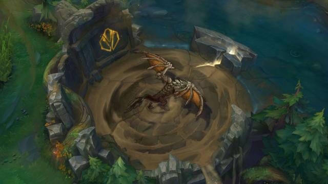

Gameplay
The main game mode of League of legends is a 5 versus 5 battle. In this portion of the tutorial we will cover map layout, objectives, Side Objectives, and positional roles.
The Map
In league of legends there are two maps, summoners rift and howling abyss. The map we will be talking about today is the main gamemodes map, Summoners Rift. Summoners Rift is layed out in a square. In each corner is each teams base and their nexus; we will get to the nexus later. The map is split into 4 main sections. Bottom lane, Middle Lane, Top Lane, The jungle, and the river. Here is a picture of the map! Driving striaght down the center is the middle lane, on the bottom half is the bottome lane, on the top side is the top lane. Running perpendicular to the midlane down the other center line in blue is the river and all of the spots inbetween are the jungle.

Objectives
The main objective of a game of league is to manipulate the map to your advantage as a team to get to the enemy teams base and destroy their "Nexus". However, there are quite of few things that are going to be in your way before we can run in and take that base! The first main objective that stands in your way are towers. Each lane has 3 towers total before cracking open the enemies base. To take an enemy tower you must manipulate the lane into your advantage. To do this we will attempt to kill or cause the enemy players in your lane to leave. Then once they are not an issue you will manipulate "Minions". Minions are small NPC's that come in waves. We use these to push into the enemy tower because a tower will attack us if we go under it alone and they do too much damage for us to sustaine and it will kill you. Below I have included a picture of what minions and towers look like.
 Towers
Towers  Minions
Minions
Once we push and take out two of the three turrets in the lane we can take the third one which is a very important turret known as the "Inhibitor Turret". This turret protects our next important objective on the way to taking the enemies base called the "Inhibitor". The Inhibitor is a small structure which we want to destroy. Once we destroy it our base will now spawn SUPER minions. Super Minions are beefed up versions of regular minions that have stronger attacks and increased armor, making them hard to kill. In addition to super minions, once the inhibitor is killed it gives us access to the Nexus turrets. Below I have inlcuded a picture of the Inhibitor, inhibitor turret, and super minions.
 Inhibitor
Inhibitor  Inhibitor Turret
Inhibitor Turret  Super Minions
Super Minions
Once we have cracked through the inhibitors we can finally start to attack the Nexus turrets. There are two turrets protecting the Nexus and we can only attack them if an inhibitor has been taken down. Once the turrets are down we will finally have access to the nexus and we can begin to destroy it and go on to win the game. This process can be difficult to complete by yourself and there are some other objectives around the map that we will talk about later that can help us accomplish our goals. Here are pictures of the Nexus turrets and the Nexus.
Nexus Turrets  Nexus
Nexus
Side Objectives
Side objectives are objectives we can take around the map that will help us accomplish our main goal of taking turrets and destroying the enemy nexus. There are 4 side objectives. The dragon, the Rift Heral, Baron, and The Elder Dragon
Dragons
The dragon is a side objective that lives in the bottom half of the river. There are 4 different types of dragons called elemental dragons. They are Infernal, Mountain, Ocean, and Cloud dragon. Each of the first two dragons that spawn are one of the 4 random elements. The third dragon to spawn determines what element the last 3 dragons will be. Once you have killed 4 dragons you get a special buff that changes based on what element the last dragons are. This is a more complicated thing so we will skip talking about it here. Each element dragon gives the team who slays them their own special mini buffs. Infernal Dragon gives the players increased damage, Cloud dragon gives increased movement speed, Mountain dragon gives increased armor to the team, and Ocean dragon gives health regeneration while out of combat. Ive included a picture of each dragon below!
Infernal Dragon Mountain DragonOcean DragonCloud Dragon
Rift Herald
Rift Herald is an interesting looking monster. He is sort of a crab man. Rift Herald lives on the opposite side of where the dragon was on the top side of the river. Rift Herald is an extremely useful objective to have but he is only available to kill for his buff for a short period of time. When you kill the Rift Herald he leaves behind his Eye. One member of your team will pick this eye up before it disappears in 30 seconds. Once you have the eye you can take it to one of the lanes that you choose and you can "Break" the eye to summon the Rift Herald in that lane. The Rift Herald will then walk with the minion waves towards the turret. Once he gets to the turret he will stop, Charge, then body slam the turret doing a lot of damage. The enemy team must either respond to this Herald or simply let him die. If you do not attack him then with each slam takes a chunk out of his health until he dies. Here are some pictures of him in his pit and in a lane.
Herald In the Baron Pit.  Herald in lane.
Herald in lane.
Baron
Baron is arguably one of the most important side objectives in the game, however, Baron is very difficult to take down alone. He is a late game side objective that you almost always must have your entire team with you to take down. Baron's buff is unique from all other buffs in the game. It empowers each player on your team, however, if you die you lose the buff before its full time has been taken up. Baron buff causes minions to become empowered if a player with the buff comes near them. This buff on the minions causes their attacks to be stronger and have more armor and health, making them an intense pushing force. Here are some pictures of Baron and the buff taking effect on the minions.
Baron Baron buff on minions
The Elder Dragon
The Elder Dragon is almost equal with Baron in terms of the buff it gives. The Elder Dragon is also a later game side objective that is difficult to take down by yourself. The Elder Dragon only spawns after a specific amount of time or if all of the elemental dragons that are going to spawn are taken down. The Elder dragon gives a large buff that increases all stats of everyone on your team and has a very special buff that some people find to be a bit over powered. With Elder Dragon buff, if the player you are attacking falls below 10 percent health, they are immediately executed by the Elder Dragon.
The Elder Dragon Dragon Execute
Roles
The last piece of the gameplay puzzle that is League of Legends are Roles. League of Legends follows a specific "Meta" and because of this there are specific roles. There is the ADC and Support, Mid Laner, Top Laner, and the Jungler. the ADC and Support role take care of the bottom lane, the mid laner takes the mid lane, the top laner takes the top lane, and the jungler roams inbetween each of the lanes providing help to each of the other lanes when needed to assist them in getting ahead. The Jungler will also help prioritise side objectives such as the Rift Herald. ADC stands for "Attack Damage Carry" and this position will generally be filled up by a marksman with high damage output. The Support role is generally a Tank or a Healer that will provide support in fights to the team. The mid laner will usually be some form of high damage mage or assasin and the top laner will normally be a heavy brawler or fighter. The Jungler is a very diverse role in that it can be covered by anything like Tanks, assasins, mages, marksman as long as it makes sense for the team. Now that you know the basics of League of Legends you can now click on the very exciting link to the left underneath "Gameplay" labeled "Unlock greatness".